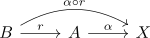
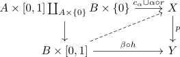
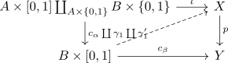
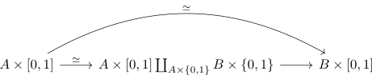

relative cw complex with homotopy equivalence and lifting problem
Proposition
Let $(B,A)$ be a CW Pair and $p: X \rightarrow Y$ a serre fibration. Suppose $A \hookrightarrow B$ is a Homotopy equivalence, then every lifting problem
\begin{displaymath}
\begin{tikzcd}
A \arrow[]{r}{\alpha} \arrow[]{d}{\iiota} & X \arrow[]{d}{p}\\
B \arrow[]{r}{\beta} \arrow[dashed]{ru}{}& Y \\
\end{tikzcd}
\end{displaymath}has a solution, unique up to homotopy relative to $\iota: A \hookrightarrow B$ which projects to the constant homotopy under $p$
Proof
existence
Since $\iota: A \hookrightarrow B$ is a cofibration and homotopy equivalence it is a deformation retract (cf. cofibration and homotopy equivalence as deformation retract, CW Pair as cofibration) Let $r: B \rightarrow A$ be a retract
Then define

Then by definition
\begin{displaymath}
\begin{tikzcd}
A \arrow[]{r}{\alpha} \arrow[]{d}{\iota}& X
B \arrow[]{ru}{\alpha \circ r} &
\end{tikzcd}
\end{displaymath}commutes
But
which is induced by a choice of defomration retraction $h: B \times [0,1] \rightarrow B$
Consider the lifting problem

where $c_{\alpha}$ is the constant homotopy
This has a solution, as $p$ is a serre fibration (cf. todo>
Then restricting to the endpoint of the lift provides a solution to the lifting problem
uniqueness
Suppose there exists two solutions $\gamma_1,\gamma_1'$ of the given lifting problem Then consider the lifting problewa

Observe that

which is by two out of three for homotopy equivalences a homotopy equivalence and a cofibration
Hence by the existence there exists a lift, i.e. a homotopy
projection
Note that by construction